Blaze Advisor
O Blaze Advisor é um software da empresa FICO que busca tornar as tarefas de decisões de negócios mais eficientes. Em sua página oficial, a FICO caracteriza o Blaze como:
"[...] uma solução escalável que proporciona agilidade e capacidade de ação sem precedentes a empresas de vários setores para tomadas de decisão mais inteligentes, transparentes e justificáveis".
Ainda em sua caracterização:
"[...] com diversos métodos para o desenvolvimento, criação e teste de regras, incluindo árvores de decisões, scorecards, tabelas de decisões, fluxos gráficos de decisões e templates personalizados".
Instalações
Os arquivos para instalação se encontram no seguinte repositório:
Instale o arquivo:
jdk-8u221-windows-x64 (JAVA)
Obs: fique atento ao local em que o programa está sendo instalado. No meu caso, ele está na seguinte pasta: C:\Program Files\Java
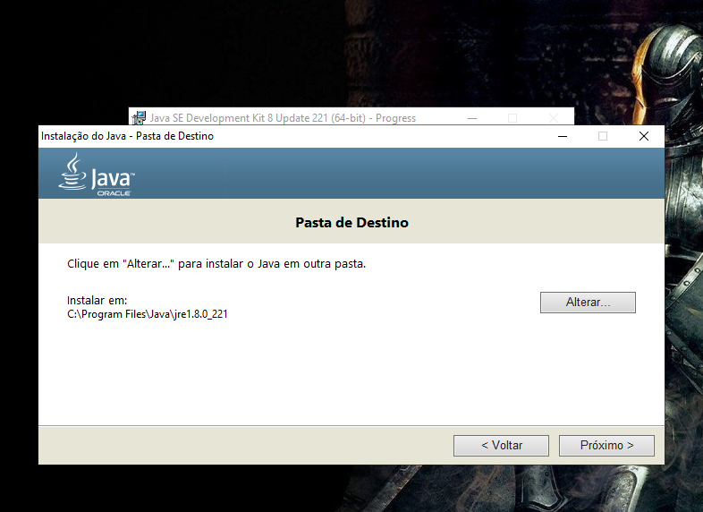
Instale o arquivo:
blaze-advisor_7.5.7500.v11760_Windows (Blaze)
Obs: novamente fique atento ao local onde o programa está sendo instalado. No meu caso, ele está na seguinte pasta: C:\Blaze.
Criar uma pasta projetos em C:\Blaze e copiar(Desempacotar) o arquivo eclipse-jee-oxygen-3a-win32-x86_64.zip para dentro desta pasta.

Renomear a pasta eclipse-jee-oxygen-3a-win32-x86_64 para eclipse01 para facilitar a localização.

Executar, com um duplo clique, o arquivo eclipse.exe que está dentro da pasta eclipse01 (pasta renomeada).
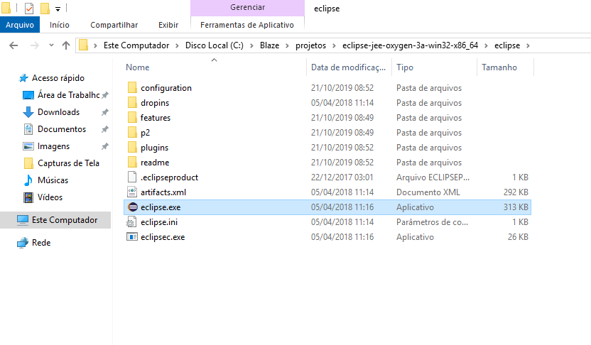
IMPORTANTE: escolher o workspace do eclipse. Você deverá escolher um workspace fácil de lembrar. No meu caso, escolhi a própria pasta do eclipse. C:\Blaze\projetos\eclipse01\eclipse-workspace
Instalar o plug-in do Blaze: após abrir o eclipse e escolher o workspace, devemos preparar o eclipse para suportar o Blaze.
- No eclipse, ir em: Help - Install new software.
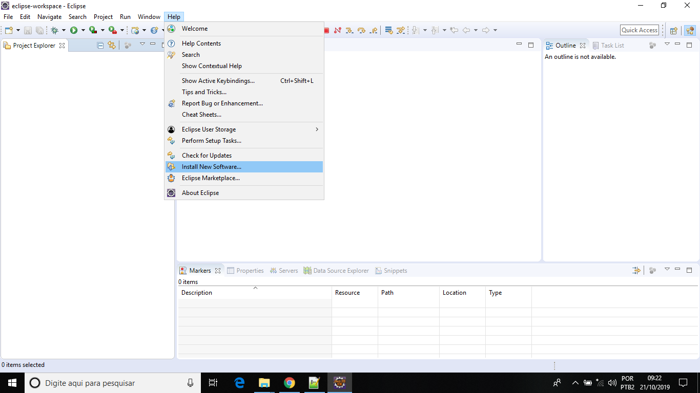
- Add - local.

- Ir na pasta C:\Blaze\Advisor75\EclipsePluginUpdateSite

- Depois de selecionar a pasta, digitar Blaze Advisor e clicar em ok.

- Selecionar Blaze Adivisor e Blaze Advisor Optional. Ir clicando em next até terminar a instalação e reiniciar o eclipse.
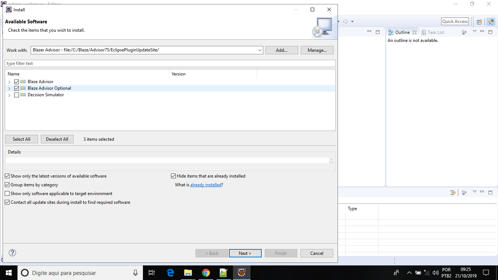
Para utilizar o plug-in do Blaze:
-
Ao reiniciar, o blaze irá pedir uma licença que pode ser adquirida com a FICO.
-
Após colocar a licença, basta ir em: Window - Perspective - Open Perspective - Other.
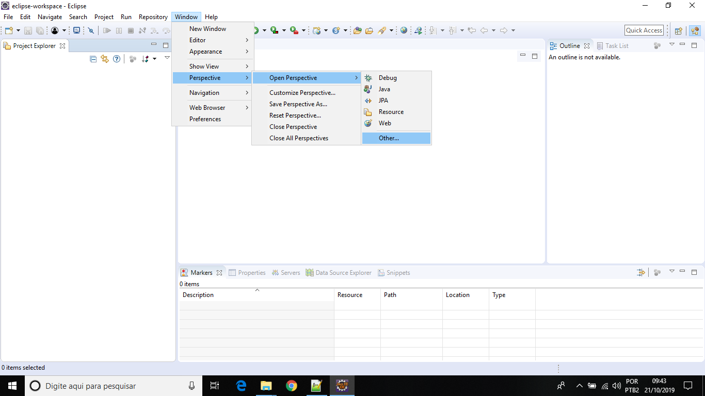
- Blaze Advisor - Open.

Criando Repositório
Todo nosso ambiente será preparado na pasta
C:\Blaze\projetos
Crie uma pasta com o nome repositorio01 em C:\Blaze\projetos

O repositório no Blaze pode ser versionado ou não versionado. Neste tutorial, iremos utilizar o sistema de versionamento do Blaze (bvs). Este sistema de versionamento funciona com base em duas partes, uma denominada Central e outra Admin. A parte central mantém um histórico de tudo que for feito no Blaze e a parte Admin é o usuário criado para gerenciar o repositório/projeto.
Crie, dentro da pasta repositório, as seguintes pastas:
- bvs-central
- bvs-admin
- workspaces
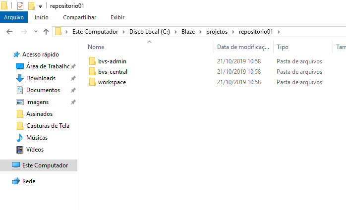
Iniciando o repositório no eclipse:
-
Após criar as pastas necessárias para o início do nosso projeto, iremos voltar ao eclipse e fazer o seguinte:
- Ir na aba Repository - New Repository [Novo Repositório]
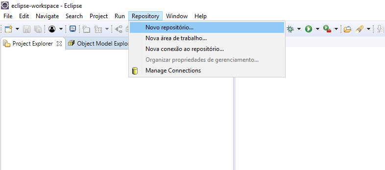
-
Escolher um nick name [Apelido] para o repositório. No meu caso escolhi: RepositorioCarro
-
Escolher um Repository Type [Tipo de Repositório]: repositório de Arquivos (Controle de Versão de BVS - Privado).
-
Ainda nesta janela, você deverá referenciar as pastas bvs-admin e bvs-central que você criou.
-
Como nas imagens abaixo, você deverá referenciar a pasta bvs-central primeiro e logo abaixo referenciar a pasta bvs-admin.
-
Colocar admin como usuário nas duas opções. Para este tutorial não será necessário utilizar senha.

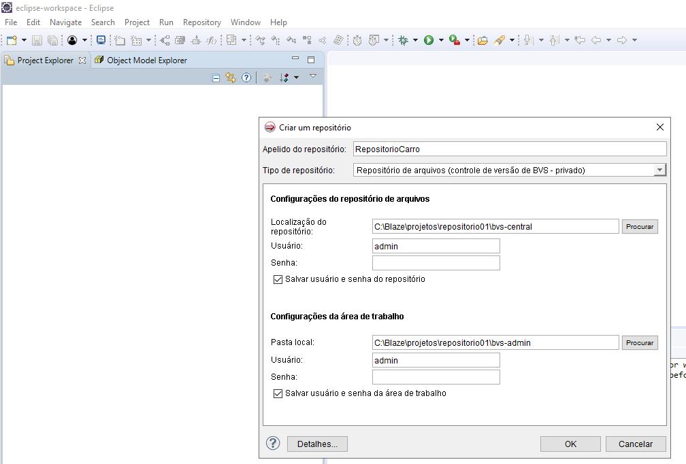
Criando um projeto
Iremos trabalhar com um projeto dividido de acordo com a seguinte estrutura:
> Technical - Business - Testing - Decision Services
Cada parte será um subprojeto e terá funções específicas que serão discutidas mais a frente.
Para iniciar, iremos criar a parte Technical do projeto:
- Ir na aba File - New - Project

- Blaze Advisor - Rule Project - Next

- Escolher o repositório que criamos - next
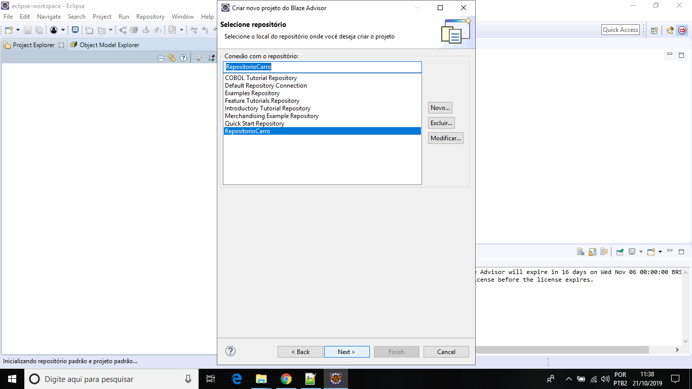
- Selecionar o repositório e colocar o nome do projeto: Technical Library

- Finish.
Business Object Model (BOM)
Neste tutorial iremos utilizar um arquivo.jar para importar as classes e as variáveis que iremos utilizar. Em um projeto Blaze você deve preparar com antecedência um rol de variáveis que irá trabalhar. Neste projeto iremos trabalhar com as seguintes variáveis:
- Variáveis de Entrada:
- RENDA
- SEXO
- IDADE
- ESTADO_CIVIL
- NUMERO_CONDUTORES
- Variáveis de Saída:
- DIARIA
- VALOR_AUTOMOVEL
- VALOR_CAUCAO
- CLIENT_TYPE
- DECISION
Em um turorial à parte, ensino a criar um arquivo.jar e a modificar este arquivo para o seu projeto, conforme suas necessidades. Porém, para este tutorial, iremos utilizar um arquivo.jar pronto.
-
Favor baixar o arquivo bom-Carro3.jar no drive:
- Baixar o arquivo e colocar na pasta C:\Blaze\projetos.
-
Importando o BOM.jar no projeto (eclipse):
-
Ir na aba Window - Preferences

-
Clicar em Blaze Advisor e ir em add library [Adicionar Biblioteca].
-
Procurar pelo arquivo que salvamos na pasta projetos bom-Carro3.jar
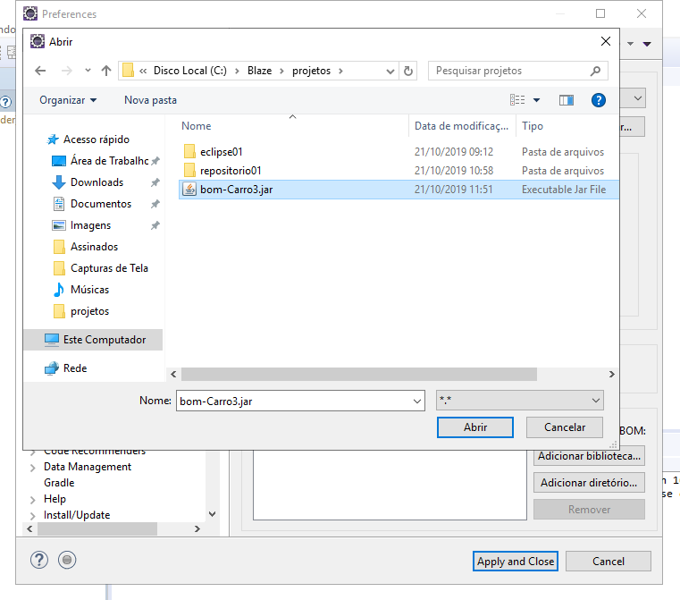
-
Após selecioado, o arquivo aparecerá na caixa de texto localizada no canto inferior esquerdo da tela.

-
Apply and Close.
-
Usando o bom-Carro3.jar
-
Clicar com o botão direito do mouse sobre a pasta Technical Library.
-
New - Folder [Pasta].
-
Dar o nome de BOM.

-
Clicar com o botão direito do mouse sobre a pasta BOM.
-
New - Business Object Model - Modelo Java
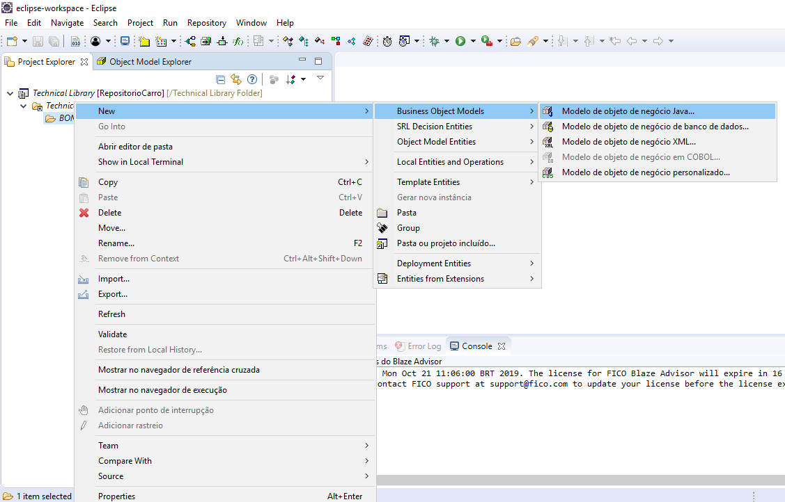
-
Selecionar a classe input e adicionar [Add].
-
Selecionar a classe output e adicionar [Add].
-
next - Finish[Concluir].
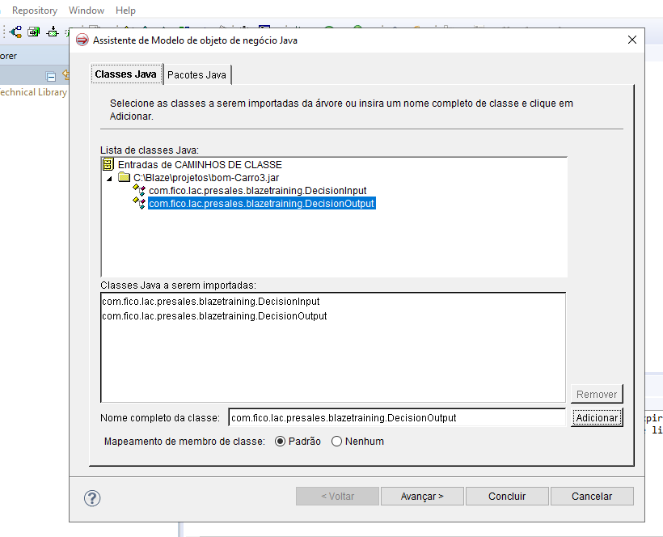
-
Nota-se que dentro da pasta BOM, no editor eclipse, foi criado um arquivo [Java]. Podemos renomeá-lo para JavaBOM para facilitar nossa compreensão.

-
Clicar com o botão direito do mouse sobre a pasta BOM.
-
Team - Check-in.
-
Adicionar um comentário e fazer o Check-in.

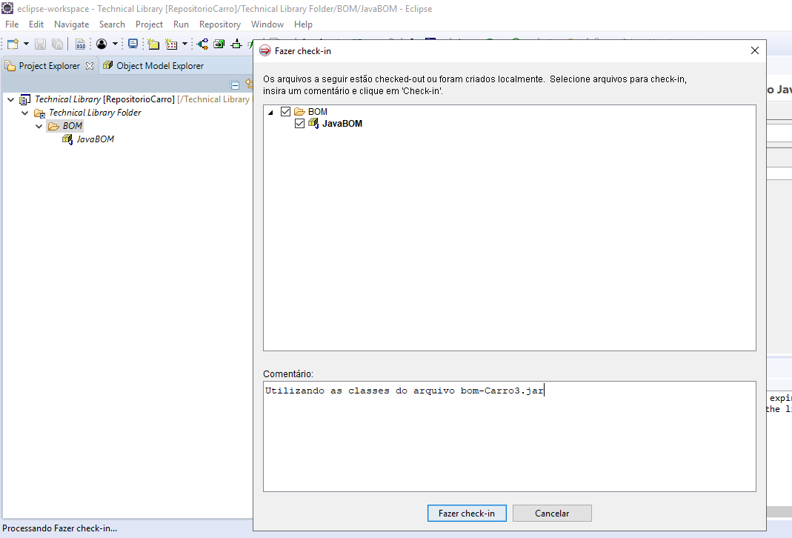
-
Obs: o tempo todo iremos utilizar as funções Check-in e Check-out.
Check-in: pode ser entendido como [SALVAR]
Check-out: pode ser entendido como [EDITAR]
Criando Projetos [Partes]
- Business Library
- File - New - Project - Blaze Advisor - Rule Project - Next - RepositorioCarro - Next - RepositorioCarro - name: Business Library - Finish.

- Testing
- File - New - Project - Blaze Advisor - Rule Project - Next - RepositorioCarro - Next - RepositorioCarro - name: Testing - Finish.
- Decision Services
- Obs: a pasta Decision Services irá ganhar o nome [RegrasAluguelCarros] para tornar o projeto mais intuitivo e facilitar a identificação.
- File - New - Project - Blaze Advisor - Rule Project - Next - RepositorioCarro - Next - RepositorioCarro - name: RegrasAluguelCarros - Finish.
Após criar os projetos nosso eclipse ficará assim:

Conectando os Projetos
Para conectar todos os projetos em apenas um, basta fazer o seguinte:
-
Clicar com o botão direito do mouse sobre o projeto RegrasAluguelCarros - open project editor [Abrir Editor de Projetos]
-
Na área de edição do projeto, clicar no ícone, como mostrado na imagem a seguir:

-
Incluir os projetos Business Library e Technical

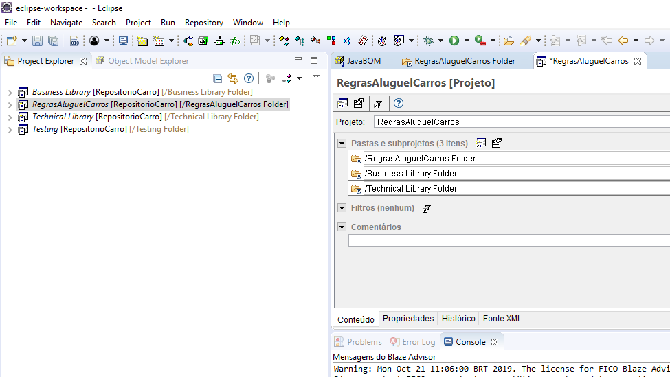
-
Clicar no ícone Salvar, na barra superior e fazer o Check-in clicando com o botão direito sobre o projeto RegrasAluguelCarros e indo na opção team.
-
Nota-se que agora os projetos estão conectados com o projeto RegrasAluguelCarros.

-
Agora podemos fechar os projetos que estão conectados ao projeto principal, pois qualquer alteração feita no projeto principal será recursiva nos projetos que estarão fechados.
-
Para fechar os projetos conectados ao principal basta clicar com o botão direito do mouse sobre o projeto que deseja fechar e ir na opção Close Project. Obs: fechar todos os projetos, deixar somente o RegrasAluguelCarros aberto.
-
Após fechar os projetos, clicar com o botão direito sobre o projeto RegrasAluguelCarros e fazer o check-in.
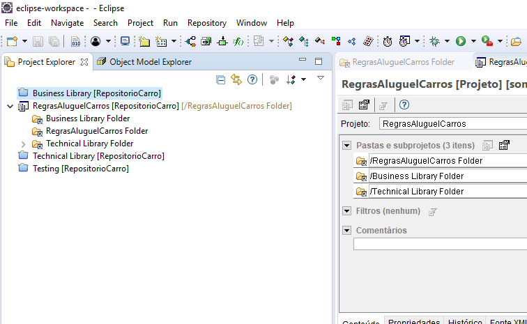
-
RMA [Rule Maintenance Application]
Antes de iniciar as configurações, vá em:
C:\Blaze\projetos e crie um pasta chamada adb.
-
Configurações de Deploy Inicial
-
Criar uma pasta com o nome de Deploy dentro do projeto Technical. Clicar com o botão direito sobre a pasta Technical dentro do projeto principal [RegrasAluguelCarros].
- New - Folder - Name: Deploy.
-
Clicar com o botão direito do mouse sobre a pasta criada [Deploy].
- New - Deployment Entities - Rule Maintenance Application Definition - Entity Name: RMADefinition - Finish.
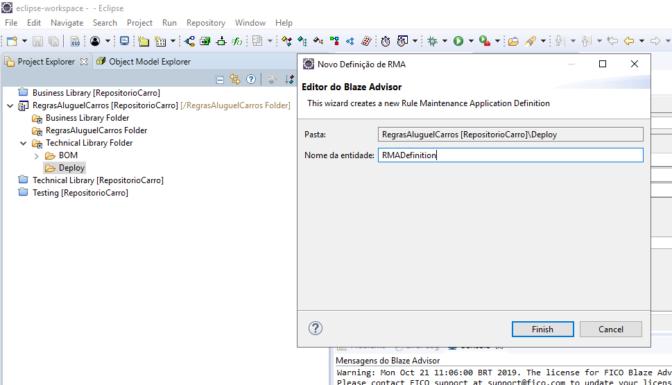
-
-
Na aba RMADefinition:
-
Application Title [Título do Aplicativo]: Regras de Aluguel de Carros
-
Habilitar as seguintes opções:
- Download Rules Command

- Ir na aba navigate [Navegação], escolher as pastas que irão aparecer no RMA. As pastas que não vão aparecer devem ficar do lado direito.
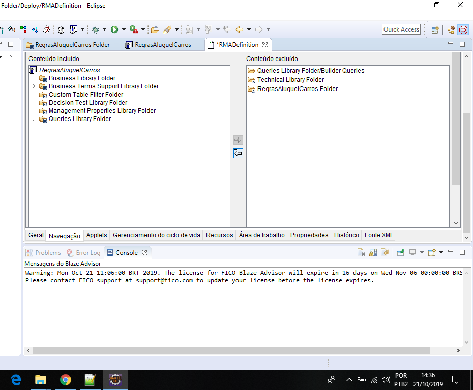
-
Ir na aba applets e marcar as opções:
- Allow Editing of Table Name.
- Display Branch Condition.
-
Ir na aba Life Cycle Management, marcar todas as opções e referenciar a pasta adb criada no início deste tópico, como mostra a imagem a seguir.
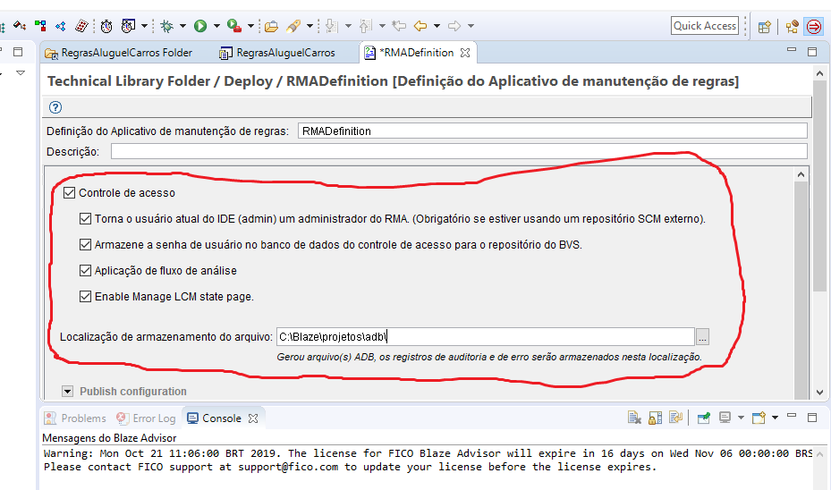
- Ir no ícone SALVAR ALL na barra superior do eclipse e fazer o check-in clicando com o botão direito sobre o arquivo RMADefinition que está dentro da pasta Deploy.
-
Função EntryPoint
Criando uma função que irá "startar" o uso do fluxo de decisão no nosso RMA.
-
No eclipse, clicar com o botão direito do mouse sobre a pasta Technical Library - New - Folder - Name: Entrypoint.
-
Clicar com o botão direito do mouse sobre a pasta Entrypoint - New - SRL Decision Entities - Function - Name: entrypoint - Finish.
- Name: entrypoint
- Type: Decisioninput
- Criar um parâmetro e o corpo de uma função.
-
Obs: faça como na imagem a seguir:

- Ir no ícone SALVAR e fazer o check-in neste arquivo.
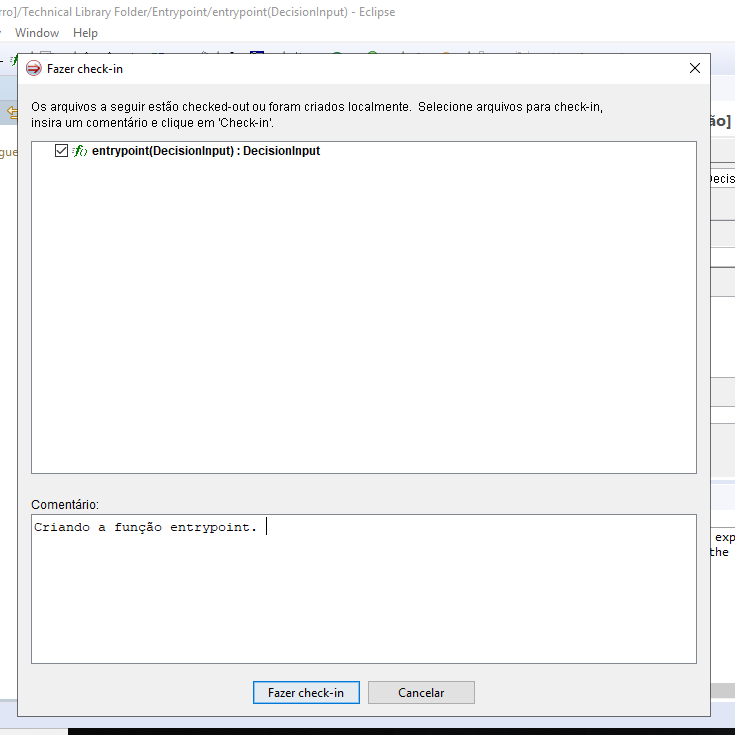
Variavel Global Input
Criando uma variável global input.
-
No eclipse, clicar com o botão direito sobre a pasta Technical [Lembrando que esta pasta está dentro de RegrasAluguelCarros].
-
New - Object Model Entities - Variable
- Nome: input
-
Na tela de edição da variável:
- Type: DecisionInput
-
Fazer check-in.
Gerar RMA [Embarcado]
-
Clicar no projeto principal [RegrasAluguelCarros] e ir em:
-
Project - Rule Maintenance Application - Generate Rule Maintenance Application.
-
Este comando irá abrir uma janela pop-up chamada Gerador de Aplicativo.
-
Nota-se que o Blaze (eclipse) já reconhece o arquivo de configurações que criamos, o RMADefinition. Este arquivo configura o deploy do projeto para o RMA WEB.
-
Podemos observar também que o Blaze já reconheceu a pasta workspaces que criamos no início deste tutorial, no tópico [Criando Repositório].
-
Deixar a opção de Deploy como:
- Web Application.

-
Ao clicar em next, devemos selecionar o arquivo bom-Carro3.jar que criamos e anexamos ao nosso projeto e, por fim, clicar em concluir.

-
O RMA irá abrir automaticamente no navegador Internet Explorer e irá utilizar o local host [http://127.0.0.1:8080] para gerar a interface.
-
A sugestão é que você copie o link e cole em um navegador mais moderno e atualizado.
-
Se você seguiu todos os passos até aqui, basta digitar admin e admin na senha para que você acesse a interface do RMA.
-
Clicando sobre o projeto, você estará na interface do RMA.


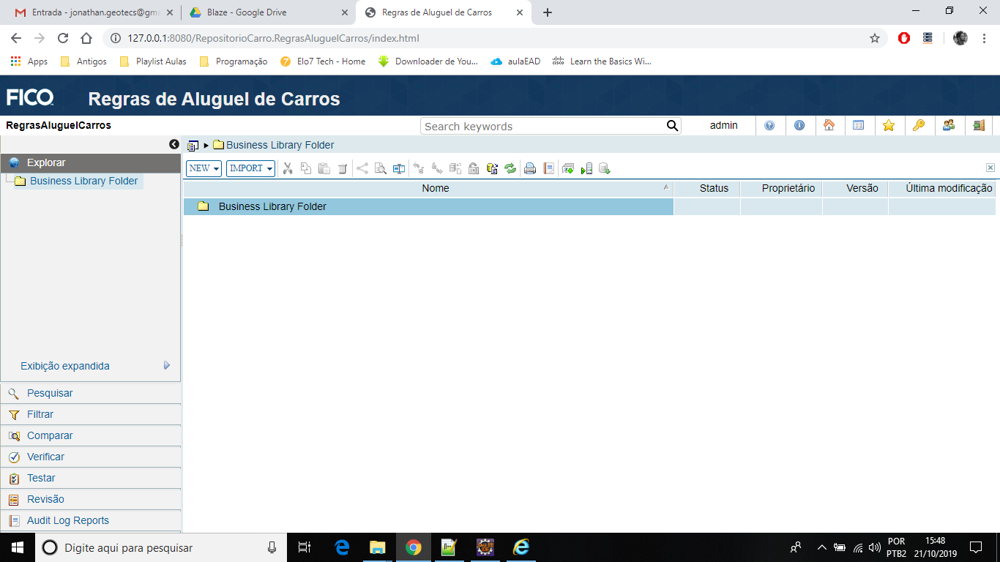
-
Mais Tutoriais - Blaze
-
2 Utilizando o RMA -
-
3 Deploy no Tomcat -
-
4 Tópicos Avançados - Em construção
Elaborado por:
Jonathan Cardoso Lopes Domingos
21/10/2019